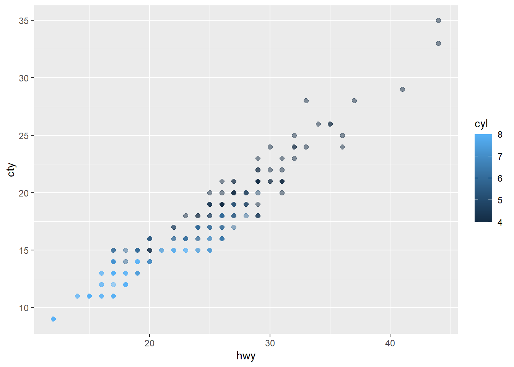
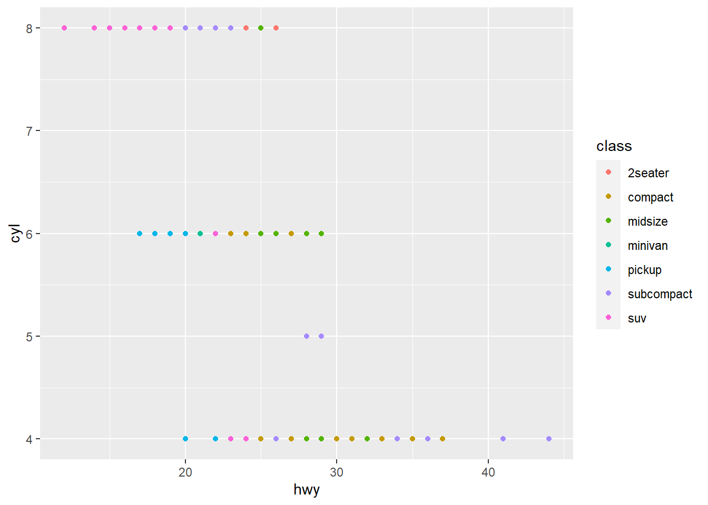

Quarto Computations
This dataset contains a subset of the fuel economy data from the EPA. Specifically, we use the mpg dataset from the ggplot2 package.
The visualization below shows a positive, strong, and linear relationship between the city and highway mileage of these cars. Additionally, mileage is higher for cars with fewer cylinders.
Code
ggplot(mpg, aes(x = hwy, y = cty, color = cyl)) +
geom_point(alpha = 0.5, size = 2)
Other types of figure can also be drawn:
Code
ggplot(mpg, aes(x=hwy, y=cyl, color = class)) +
geom_point()